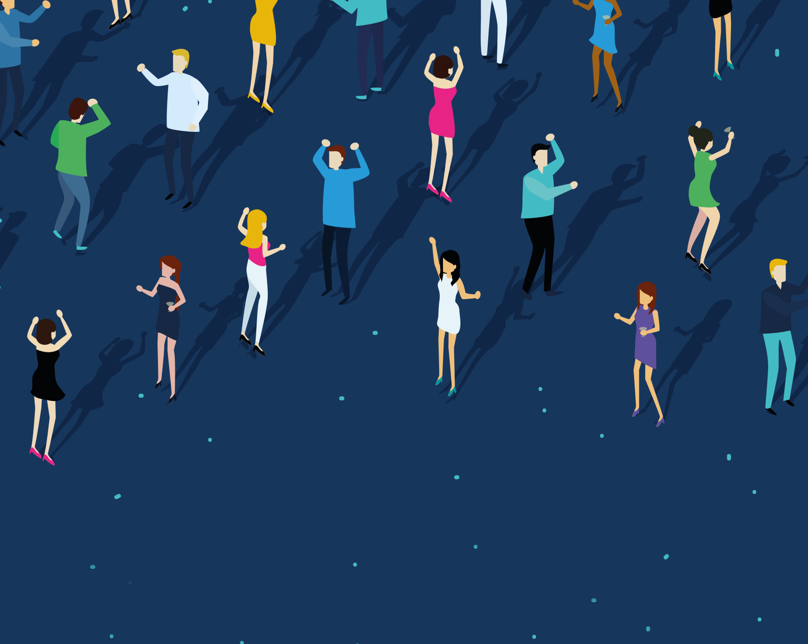
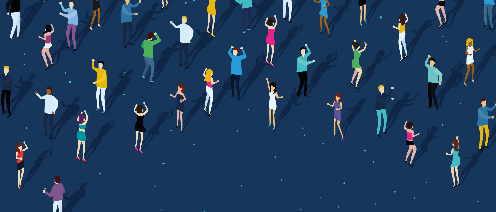
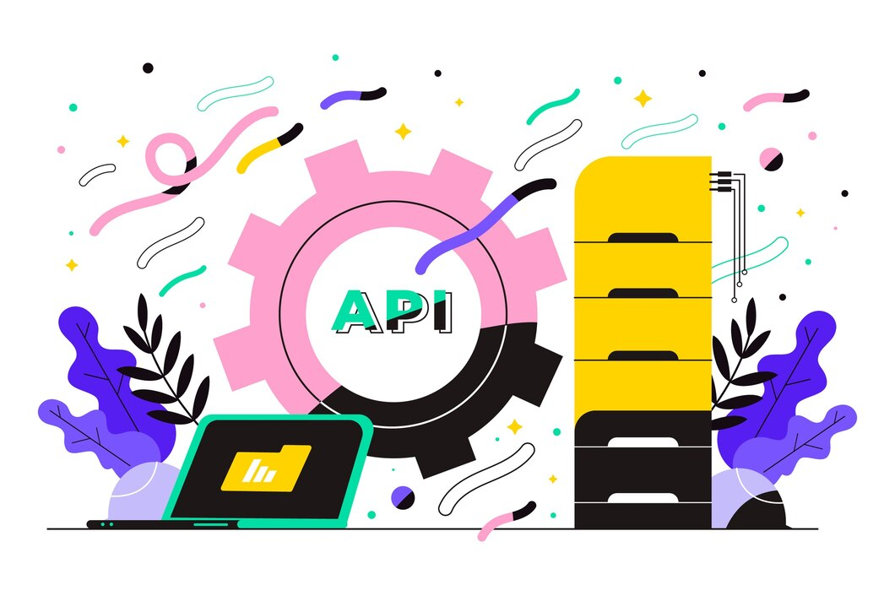

María A. Medina
Profesora-investigadora del Departamento de Posgrado en la Universidad Politécnica de Puebla. La Dra. Medina pertenece al SNI nivel 1, ...

Aquino Velasco O.
Ingeniero en Computación trabaja en Datyra Inc., con experiencia en el modelado, implementación y despliegue de algoritmos de Inteligencia Artificial, ...

Efren Sánchez
Licenciado en Informática, Trabaja para Red Hat México. Desempeñó como servidor público en proyectos de modernización y adopción de software de código abierto, ...

Conferencias
10:00-11:00 hrs
Software de Código Abierto desde la perspectiva empresarial
Ing. Efrén Sánchez. Red Hat México.
Revisaremos los fundamentos, las empresas que confiaron y que siguen vigentes, el modelo económico y el proceso que lo sustenta para después abordar el score actual y las tendencias del mercado siendo un espacio para la discusión abierta y la reflexión.
Palabras clave: Software, Código Abierto, Software Libre, Economía, Misión Crítica, Entorno Empresarial, Tendencias, Tecnología, Gobierno, Desarrollo de Software, Nube híbrida.
11:00-12:00 hrs
Un modelo de Machine Learning para la detección de Malware en sistemas Android
Dr. Tomás Pérez Becerra.Universidad Tecnológica de la Mixteca.
Actualmente, Android es el sistema operativo móvil líder con el mayor porcentaje de cuota de mercado global. La proliferación de mercados de aplicaciones de terceros también lo han convertido en un objetivo popular del malware. El malware es cualquier tipo de software malicioso puede incluir virus, troyanos, ransomware, spyware y otras formas de software malicioso que pueden dañar el dispositivo, robar información personal, comprometer la privacidad del usuario o realizar otras actividades perjudiciales. En esta plática se mostrarán las características para reconocer un ataque y se presentará un modelo de aprendizaje máquina auxiliar en la detección de Malware.
Palabras Claves: Malware, Android, Machine learning.

12:00-13:00 hrs
Introducción a los LLM's: Fundamentos y aplicaciones.
Ing. Aquino Velasco Osorio. Datyra Inc.
Se exploraran los fundamentos y aplicaciones de los Modelos de Lenguaje de Gran Tamaño (LLM, por sus siglas en inglés). Se abordarán sus principios básicos, incluyendo la arquitectura subyacente y el proceso de entrenamiento. Además, se discutirá cómo estos modelos, como GPT-4, están transformando áreas como la generación de texto, la traducción automática y la asistencia en la investigación. La charla también considerará los desafíos éticos y las limitaciones actuales, proporcionando una visión comprensiva del estado y el futuro de los LLMs.
Palabras clave: LLMs, IA generativa, Aplicaciones de LLM's, traducción automática .
13:00-14:00 hrs
Software libre para reducir la brecha tecnológica en comunidades de Oaxaca
Ing. Abel Augusto Pacheco Angeles. WaxacaBytes.
Descubre cómo el software libre puede transformar la educación en comunidades rurales de Oaxaca. Exploraremos cómo la implementación de centros de cómputo con Linux y otras soluciones de código abierto está empoderando a estudiantes con habilidades tecnológicas básicas. Hablaremos de las iniciativas que están cerrando la brecha digital y preparando a los alumnos para enfrentar los desafíos del mundo actual. Únete a esta charla para conocer cómo podemos ampliar el apoyo a más comunidades y así abrir nuevas oportunidades en la educación.
Palabras Claves: Brecha tecnológica, Comunidades rurales, Educación, Software Libre, Centro de cómputo.

9:00-10:00 hrs
Telecomunicaciones Forense
Mtra. Nataly Coss Sansón. Binario Consultores.
Explicar el concepto de Telecomunicaciones Forense, así como las actividades, retos y software a usar.
Palabras clave: ...

10:00-11:00 hrs
Evidencia Digital
Mtro. Víctor René Silva Xilotl. Binario Consultores.
Explicar el concepto de Evidencia Digital, como generarla, como impacta en una investigación y software de procesamiento.
Palabras Claves: ...

11:00-12:00 hrs
Datos abiertos: definiciones, características de calidad y ejemplo de uso para el estudio exploratorio del ciber-acoso.
Dra. María Auxilio Medina Nieto. Universidad Politécnica de Puebla.
Los datos abiertos son bienes públicos. La conferencia presenta definiciones de datos abiertos, explora fuentes de datos con temáticas de interés nacional. Después, se presentan las características del modelo de calidad ISO/IEC 25012 y éstas se aplican al Módulo del Ciberacoso del Instituto Nacional de Estadística y Geografía. Posteriormente, se muestra el uso de las tecnologías semánticas para construir conjuntos de datos por estado con base en los principios FAIR, siglas que corresponden a los términos en inglés findable, accesible, interoperable y reusable. Finalmente, se exponen los retos de la gestión de los datos abiertos.
Palabras clave: datos abiertos, ISO/IEC 25012, principios FAIR, ciber-acoso.
12:00-13:00 hrs
DevSecOps: Herramientas Open Source para la implementación de Pipelines.
Ing. Israel Bazán. HSBC Centro de Cómputo Toluca Área de GPS (Global Payments Sistemas)
DevSecOps es una práctica que combina Desarrollo (Dev), Operaciones (Ops) y Seguridad (Sec) para integrar la seguridad en todo el ciclo de vida del desarrollo de software. En el contexto del Scaled Agile Framework (SAFe), DevSecOps se enfoca en acelerar el flujo de valor al tiempo que se garantiza la seguridad y la calidad del software. La combinación de SAFe y DevSecOps permite a las grandes empresas acelerar su negocio mientras mantienen altos estándares de seguridad y calidad. Implementar un pipeline con herramientas de código abierto puede ser una excelente manera de gestionar y automatizar el flujo de trabajo en el desarrollo de software.
Palabras Claves: DevOps, DevSecOps, Scaled Agile Framework, Value Stream, Open Source, IT Security, OWASP, Continuous Delivery Pipeline.